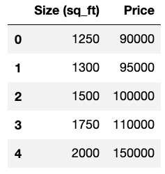

4/7/2020 - Linear regression is one of the most well-known machine learning algorithms. Most people interested in machine learning will study this algorithm first. In this tutorial we're going to take a look at the math involved in the algorithm while also learning some basic machine learning terminology. I'm writing this tutorial after completing the linear regression portion of Andrew Ng's Machine Learning Course.
Unsupervised Learning
Machine learning algorithms are classified as either unsupervised learning algorithms, supervised learning algorithms or reinforcement learning algorithms. Linear regression is an unsupervised learning algorithm which means that the output of the model is known in advance. An example of an unsupervised learning algorithm is a dataset that contains a list of houses with the size of each house and the price of each house. We know in advance that given the size of a house we want to predict the price. Supervised learning algorithms and reinforcement learning algorithms will be explained in a later tutorial. Below we have an example housing dataset with 5 entries:
Regression Problem
Unsupervised learning algorithms are broken down into regression problems and classification problems. Regression problems have continuous valued output, and classification problems have discrete valued output. Examples of continuous valued output are prices and temperatures, and examples of discrete valued output are true/false values and anything else that can be split up into individual categories.
Visualizing Our Data
To get a better understanding of the dataset we're working with it helps to visualize the data. Here we plot the output (prices) on the y axis and the input (size) on the x axis:
Our goal with linear regression is to find a regression line that fits our data best. In the next plot you can see a green regression line and a red regression line; the green line fits our data best because the cost function is minimized when using the green line.

The Cost Function
Our linear regression function is defined as \(h_\theta(x)\) where $$h_\theta(x) = \theta_0 + \theta_1x$$ You can see that this function is the same \(y = m(x) + b\) function that you learned in high school. As a side note, another name for our linear regression function is "hypothesis", and I'll be refering to it as such throughout the rest of the tutorial. Another side note: when you see anything to the i'th power in this tutorial, the notation is not to be interpreted as an exponent; it's referring to the current iteration.
Our cost function is defined as $$J(\theta_0, \theta_1) = \frac{1}{2m} \sum_{i=0}^{m-1} (h_\theta(x^i) - y^i)^2$$ where \(m = \) the number of data points (which is 5 in our ongoing example). We want to find values of theta that will minimize our cost function. Before calculating \(J(\theta_0, \theta_1\)) for our red line above, we need to compute our values for \(h_\theta(x^i\)). Our values for \(\theta_0\) and \(\theta_1\) are -50 and 77, respectively. Don't worry about how we got these values; in the next part of this tutorial we'll see how these values are found using gradient descent. We'll now look the values located on the red line that are on the same vertical line as our data points. These will be the values for \(h_\theta(x)\) when we compute our cost function: $$h_\theta(x^0) = -50 + 77(1250) = 96,200$$ $$h_\theta(x^1) = -50 + 77(1300) = 100,050$$ $$h_\theta(x^2) = -50 + 77(1500) = 115,450$$ $$h_\theta(x^3) = -50 + 77(1750) = 134,700$$ $$h_\theta(x^4) = -50 + 77(2000) = 153,950$$
Plugging these values into our cost function we get: $$J(-50, 77) = \frac{1}{10} * $$ $$((96,200 - 90,000)^2 + $$ $$(100,050 - 95,000)^2 + $$ $$(115,450 - 100,000)^2 + $$ $$(134,700 - 110,000)^2 + $$ $$(153,950 - 150,000)^2)$$
which simplifies to $$J(-50, 77) = \frac{1}{10} * $$ $$((6,200)^2 + $$ $$(5,050)^2 + $$ $$(15,450)^2 + $$ $$(24,700)^2 + $$ $$(3,950)^2)$$
and for our final answer we get $$J(-50, 77) = 92,833,750$$
If we were to repeat the same process for the green line, our final answer would be $$J(-2204.03, 71.28) = 30,264,510.62$$
Back to homepage